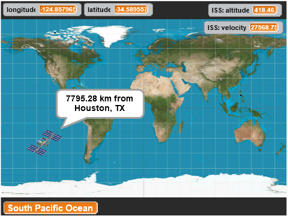

This is a modified clone of the ORIGINAL Scratch ISS Tracker Extension
This Scratch extension lets you track the progress of the International Space Station in it's orbit around the planet Earth.
The International Space Station data comes from wheretheiss.at created by Bill Shupp.
Note: This part of the code in the original extension used a rate-limited call to whertheiss.at so if this plugin was run on multiple computers this data would be blocked very quickly due to too many requests.
I have now replaced this call with one to my own servers (status.issabove.info) in a way that can scale to use in the clasroom.
Longitude/Latitude data comes from OpenStreetMap.
Placename data comes from GeoNames.org via a rate optimized api call from an ISS-Above cloud server
Get more information about the Internation Space Station at NASA
All you need to use the ISS Tracker extension is an active internet connection.
Load the ISS Above Tracker extension on ScratchX
(this is an empty project - just the extension gets loaded - for a more complete example see the link to the example project below)
This is a brief description of each of the Scratch blocks included with the ISS Tracker extension.
Runs when the ISS comes within 500km of a specified location.
Gives the distance between the ISS and a specified location. Distance can be returned in kilometers or miles. The haversine formula is used to calculate the distance between two points.
Provides the current longitude, latitude, altitude, or velocity and placename of the ISS.